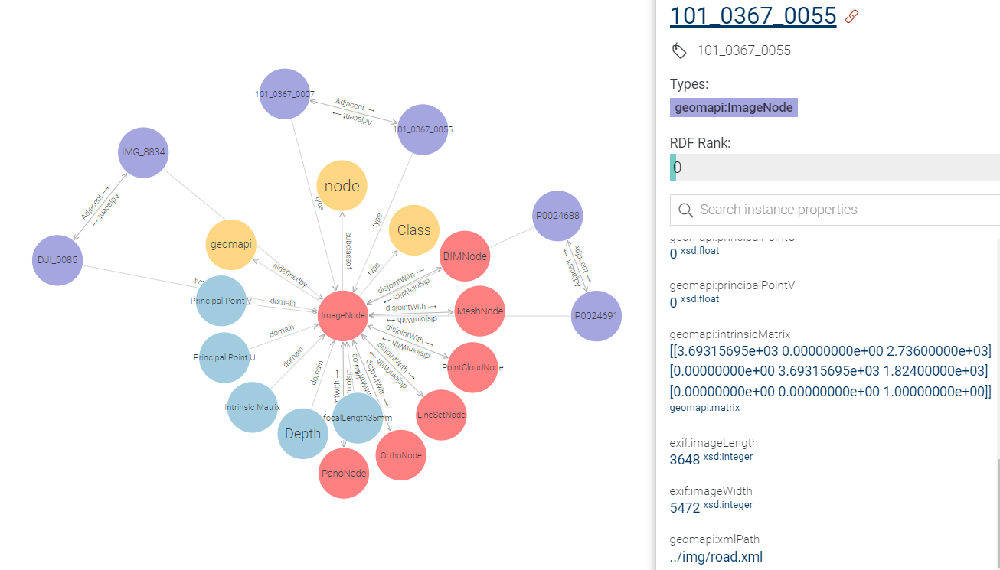

geomapi.nodes.imagenode
ImageNode is a Python Class to govern the data and metadata of pinhole camera data i.e. normal cameras.
This node builds upon the [OpenCV](https://opencv.org/), [Open3D](https://www.open3d.org/) and [PIL](https://pillow.readthedocs.io/en/stable/) API for the image definitions. Be sure to check the properties defined in those abstract classes to initialise the Node.
IMPORTANT: This Node class is designed to manage geolocated imagery. It works best when the camera interior and exterior parameters are known. The class can be used to generate virtual images, raycasting, and other geometric operations.
- class geomapi.nodes.imagenode.ImageNode(subject: URIRef | None = None, graph: Graph | None = None, graphPath: Path | None = None, name: str | None = None, path: Path | None = None, timestamp: str | None = None, resource=None, cartesianTransform: ndarray | None = None, orientedBoundingBox: open3d.geometry.OrientedBoundingBox | None = None, convexHull: open3d.geometry.TriangleMesh | None = None, loadResource: bool = False, xmpPath: Path = None, xmlPath: Path = None, imageWidth: int = None, imageHeight: int = None, principalPointU: float = None, principalPointV: float = None, focalLength35mm: float = None, intrinsicMatrix: ndarray = None, keypoints: ndarray = None, descriptors: ndarray = None, depth: float = None, **kwargs)
Bases:
Node- __init__(subject: URIRef | None = None, graph: Graph | None = None, graphPath: Path | None = None, name: str | None = None, path: Path | None = None, timestamp: str | None = None, resource=None, cartesianTransform: ndarray | None = None, orientedBoundingBox: open3d.geometry.OrientedBoundingBox | None = None, convexHull: open3d.geometry.TriangleMesh | None = None, loadResource: bool = False, xmpPath: Path = None, xmlPath: Path = None, imageWidth: int = None, imageHeight: int = None, principalPointU: float = None, principalPointV: float = None, focalLength35mm: float = None, intrinsicMatrix: ndarray = None, keypoints: ndarray = None, descriptors: ndarray = None, depth: float = None, **kwargs)
Creates an ImageNode. Overloaded function.
This Node can be initialised from one or more of the inputs below. By default, no data is imported in the Node to speed up processing. If you also want the data, call node.get_resource() or set getResource() to
- Args:
subject (RDFlib URIRef) : subject to be used as the main identifier in the RDF Graph
graph (RDFlib Graph) : Graph with a single subject (if multiple subjects are present, only the first will be used to initialise the Node)
graphPath (Path) : Graph file path with a single subject (if multiple subjects are present, only the first will be used to initialise the Node)
path (Path) : Path to an image .jpg, jpeg, .png file (data is not automatically loaded)
resource (ndarray, PIL, Open3D) : Image data from [Open3D](https://www.open3d.org/), [OpenCV](https://opencv.org/) or [PIL](https://pillow.readthedocs.io/en/stable/).
xmlPath (Path) : Xml file path from Agisoft Metashape
xmpPath (Path) : xmp file path from RealityCapture
getResource (bool, optional= False) : If True, the node will search for its physical resource on drive
imageWidth (int, optional) : width of the image in pixels (u). Defaults to 640p
imageHeight (int, optional) : height of the image in pixels (v). Defaults to 480p
intrinsicMatrix (np.array, optional) : intrinsic camera matrix (3x3) k=[[fx 0 cx] [0 fy cy][0 0 1]]
focalLength35mm (float, optional) : focal length with a standardized Field-of-View in mm.
keypoints (np.array, optional) : a set of image keypoints, generated through sift or orb.
descriptors (np.array, optional) : a set of image descriptors, generated through sift or orb.
- Returns:
ImageNode : An ImageNode with metadata
- property xmpPath
Get the xmpPath (str) of the node. This is the RealityCapture xmp file path.
- property xmlPath
Get the xmlPath (str) of the node. This is the RealityCapture xml file path.
- property imageWidth
Get the imageWidth (int) or number of columns of the resource of the node.
- property imageHeight
Get the imageHeight (int) or number of rows of the resource of the node.
- property principalPointU
Get the principalPointU (float) of the node. Note that this is the deviation, not the actual value.
- property principalPointV
Get the principalPointV (float) of the node. Note that this is the deviation, not the actual value.
- property focalLength35mm
Get the focalLength35mm (float) of the node.
- property keypoints
Get the keypoints (np.array) of the node. These are the distinct pixels in the image.
- property descriptors
Get the descriptors (np.array) of the node. These are the unique features of the image.
- property intrinsicMatrix
Get the intrinsic camera matrix (np.array) of the node. k= [fx 0 cx] [0 fy cy] [0 0 1]
- property depth
Get the maximum depth of the image, defaults to one
- property resource
The resource (mesh, image, etc.) of the node. If no resource is present, you can use get_resource(), to load the resource from a path or search it through the name and graphpath.
- Inputs:
self.path
self.name
self.graphPath
- get_metadata_from_exif_data(path) bool
Returns the metadata from a resource.
- Args:
GPSInfo (geospatialTransform (np.array(3,1))
coordinateSystem (str)
DateTime (‘%Y-%m-%dT%H:%M:%S’)
XResolution (int)
YResolution (int)
ResolutionUnit (int)
ExifImageWidth (int)
ExifImageHeight (int)
- Returns:
bool: True if meta data is successfully parsed
- get_metadata_from_xmp_path() bool
Read Metadata from .xmp file generated by https://www.capturingreality.com/.
- Smple Data:
<x:xmpmeta xmlns:x=”adobe:ns:meta/”> <rdf:RDF xmlns:rdf=”http://www.w3.org/1999/02/22-rdf-syntax-ns#”>
<rdf:Description xcr:Version=”3” xcr:PosePrior=”locked” xcr:Coordinates=”absolute” xcr:DistortionModel=”brown3” xcr:FocalLength35mm=”24.3765359225552” xcr:Skew=”0” xcr:AspectRatio=”1” xcr:PrincipalPointU=”-0.000464752782510192” xcr:PrincipalPointV=”-0.000823593392050301” xcr:CalibrationPrior=”exact” xmlns:xcr=”http://www.capturingreality.com/ns/xcr/1.1#”> <xcr:Rotation>0.412555151152903 0.910841439690343 0.0128887159933671 0.0412058430083455 -0.00452553581407911 -0.999140429583083 -0.910000178988533 0.412731621357468 -0.0393990224812024</xcr:Rotation> <xcr:Position>66.8850552499877 45.2551194778559 5.45377092514118</xcr:Position> <xcr:DistortionCoeficients>-0.124217384759894 0.107339706650415 -0.0104748224573926 0 0 0</xcr:DistortionCoeficients> </rdf:Description>
</rdf:RDF> </x:xmpmeta>
- Returns:
bool: True if metadata is sucesfully parsed
- load_resource() ndarray
Returns the data in the node. If none is present, it will search for the data on using the attributes below.
- Args:
self.path
- Returns:
np.ndarray or None
- save_resource(directory: Path | str = None, extension: str = '.jpg') bool
Export the resource of the Node.
- Args:
directory (str, optional) : directory folder to store the data.
extension (str, optional) : file extension. Defaults to ‘.jpg’.
- Raises:
ValueError: Unsuitable extension. Please check permitted extension types in utils._init_.
- Returns:
bool: return True if export was succesfull
- get_image_features(featureType: str = 'orb', max: int = 1000) Tuple[array, array]
Get the keypoints and the descriptors of this Nodes Image resource
- Args:
keypoints (cv2.keyPoints) : The featuretype to detect, use: orb, sift. Defaults to “orb”.
- Returns:
img_with_keypoints : Tuple[np.array, np.array] with the keypoints and the descriptors
- draw_keypoints_on_image(keypoint_size: int = 200, overwrite: bool = False) array
Detect and show keypoints on the image.
- Args:
img (np.array): The input image. featureType (str): The type of features to detect (‘orb’, ‘sift’, ‘fast’). max_features (int): The maximum number of features to detect.
- Returns:
np.array: The image with keypoints drawn.
- create_rays(imagePoints: ndarray, depths: ndarray = None) ndarray
Generate rays from the camera center through given image points.
- Args:
imagePoints (np.ndarray): (n, 2) Pixel coordinates (row, column). depths (np.ndarray, optional): If None, rays are cast at unit distance along camera direction.
- Returns:
np.ndarray: (n, 6) where [:, 0:3] is origin, [:, 3:6] is unit direction.
- world_to_pixel_coordinates(worldCoordinates: ndarray, use_z_depth=False) ndarray
Projects 3D world points to 2D image coordinates. Optionally returns z-depths instead of Euclidean distances.
- Args:
worldCoordinates: (N, 3) array of world coordinates [X, Y, Z] use_z_depth: if True, return z-axis depth instead of Euclidean distance
- Returns:
image_points: (N, 2) pixel coordinates depths: (N,) z-depths or Euclidean distances
- pixel_to_world_coordinates(pixels: array, depths: array = None, use_z_depth=False) ndarray
Back-projects image points to 3D world coordinates using either z-depth or Euclidean distance.
- Args:
pixels: (N, 2) array of pixel coordinates depths: (N,) array of z-depths or Euclidean distances use_z_depth: if True, interpret depths as z-axis depth
- Returns:
world_points: (N, 3) array of world coordinates
- show(convertColorspace=False, show3d=False)
Creates a visualization of the resource (if loaded)